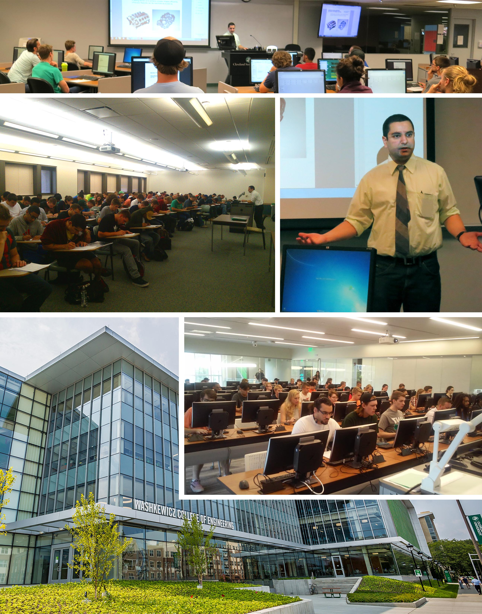
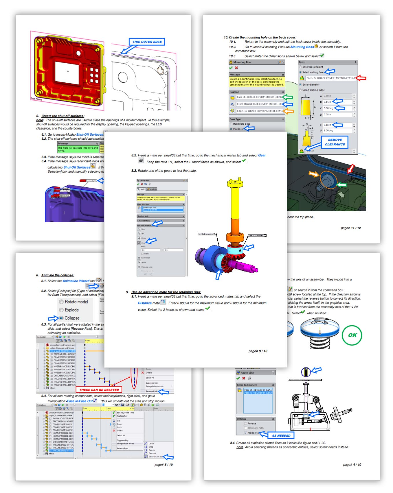
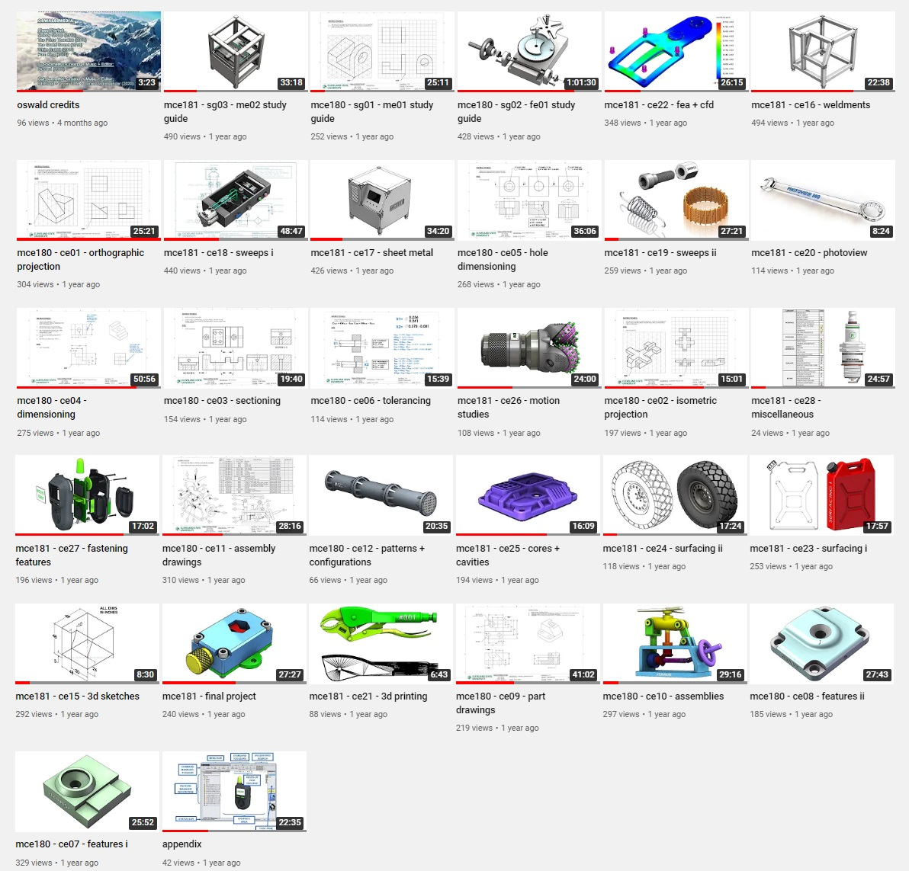
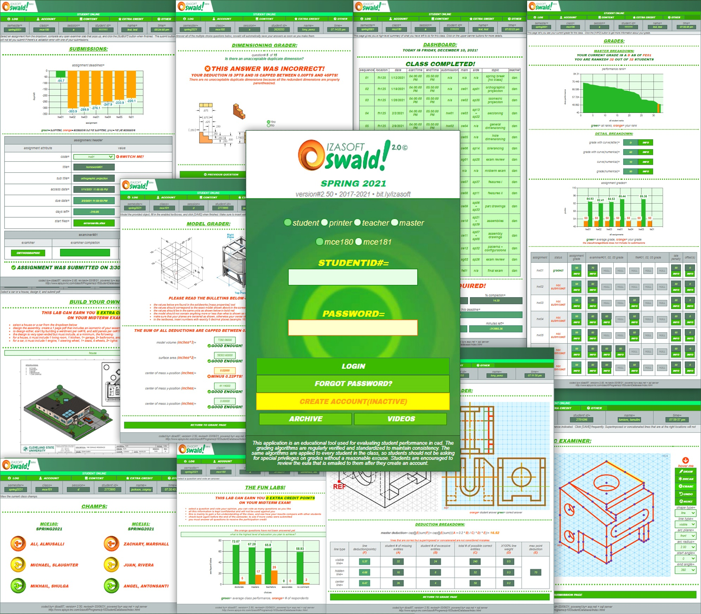
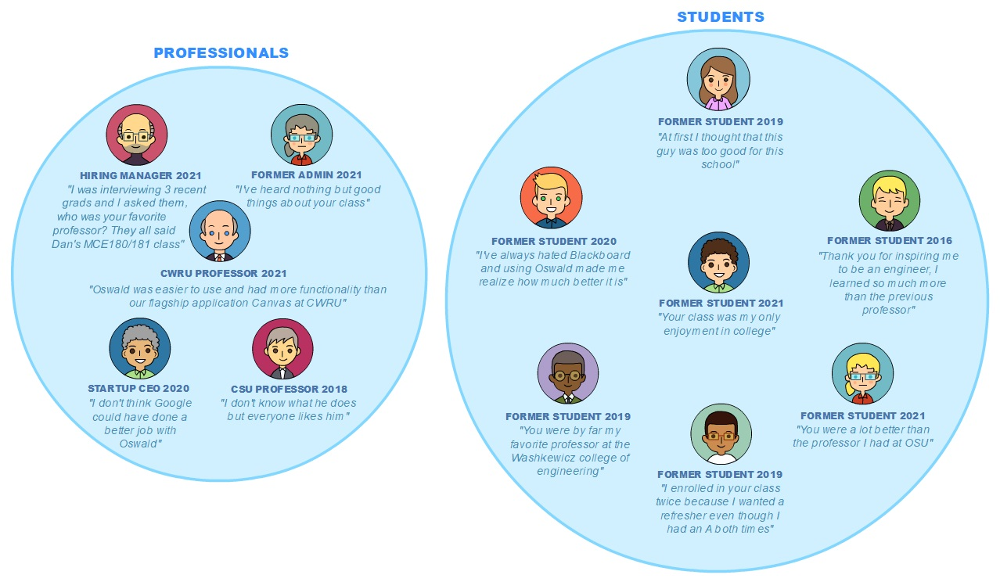

|
TEACHING:
RELEVANT SOFTWARE: SUMMARY: In the evenings, Dan teaches a number of engineering classes at universities and colleges in the NorthEast Ohio area. One of the universities he teaches at is Case Western Reserve Univerity (CWRU), the top university in Ohio and the top 25th in the world according to Time Magazine. Alumni engineers includes the inventor of Gmail, anti-virus software, carbon fiber, and intermittent windshield wipers per the premise of the movie 'Flash Of Genius'. Alumni founders / CEOs includes Warner Bros, Parker Hannifin, Dow Chemical, Craigslist, Glassdoor, Sherwin Williams, and multiple recipients of the Turing award and Nobel prize. Dan has been teaching since August 2015 and his class sizes range from 60 - 220 students per semester. Every semester, he usually works with 2 - 5 TAs (Teaching Assistants) to help with the efforts associated with running the class. Dan believes that with any craft, it starts with learning it, mastering it, and finally teaching it. Teaching is always the last stage of every mastery.  Figure 7.1: Dan teaching engineering classes at Cleveland State University.He teaches both software and mechanical engineering courses. His software courses are mainly about full stack development and his mechanical courses are mainly about full-cycle machine development. They include computer aided design / 3D drafting, ANSI dimensional standards, part drawings, assembly drawings, FEA, advanced modeling, schematic interpretation, pneumatic systems, and design for manufacturing. At the end of the semester, students are asked to design a fixture (3 - 5 parts) that gets 3D printed and must be functional. His teaching philosophy is to deliver an education that encourages innovation, quality, and "thinking smarter instead of harder". His classes are mainly focused on practical knowledge so that students are prepared for the industry. He likes to teach students how to fish instead of giving them a fish. TEXTBOOK: Dan wrote a 200 page textbook for 2 engineering courses he taught at Cleveland State University. He broke down the process of machine design from part to completed assembly into 32 chapters that fit exactly with the schedule of the courses. Each chapter was designed to take 2hrs to complete, the exact duration of each lecture session. Each page was designed to be easy to follow with simple instructions, screenshots, and indicators.  Figure 7.2: Example pages of Dan's textbook.VIDEOS: Dan also recorded, edited, and deployed over 32 of his engineering lectures as shown on this channel. He did this mainly during the COVID lockdown so that students can view the lectures while staying at home.  Figure 7.3: Youtube video channel.SOFTWARE: Dan also built a fully-autonomous enterprise app for his classes, called Oswald. As described in the software section, this app was fully-autonomous, meaning the instructor only had to show up to class and lecture, and the app would 100% manage the entire class. This includes grading, book-keeping, scheduling, randomized team grouping, group contribution voting, automated ABET data generation, and late penalty calculations. At the end of the semester, the instructor only had to click an export button, and the entire grade sheet would be generated.  Figure 7.4: Oswald application.TESTIMONIALS: The testimonials below are all real and were provided from former professionals and students. Their names and faces were removed but their avatars reflect how they actually looked liked in real life, as far as sex, race, age, and whether they wore glasses.  Figure 7.5: Testimonials over the course of 6 years. |